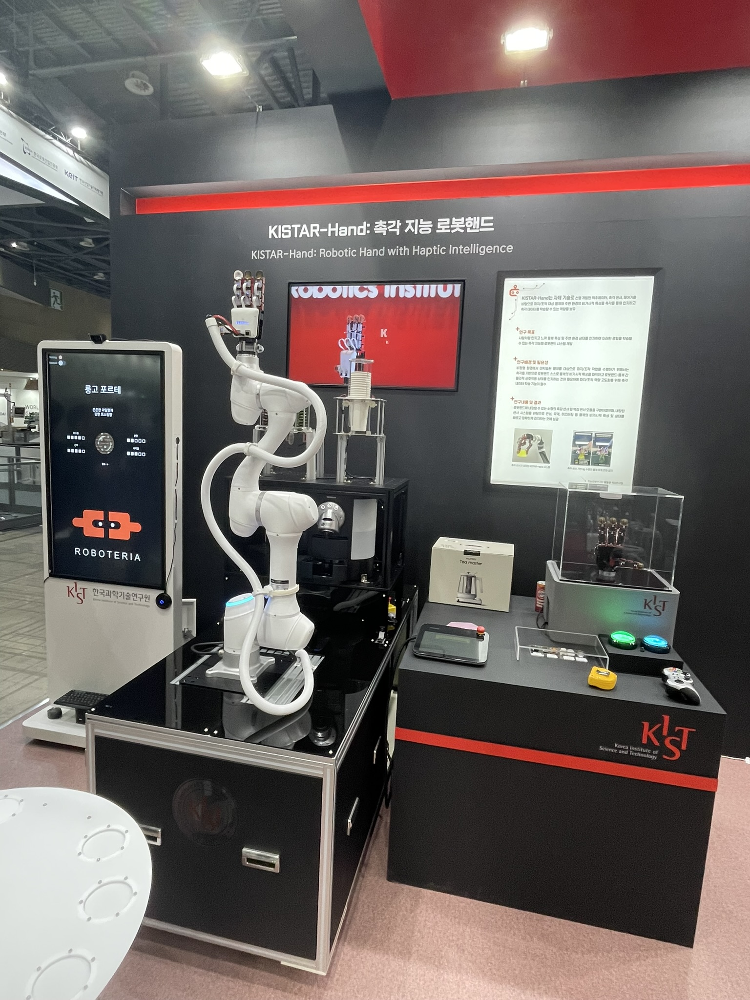
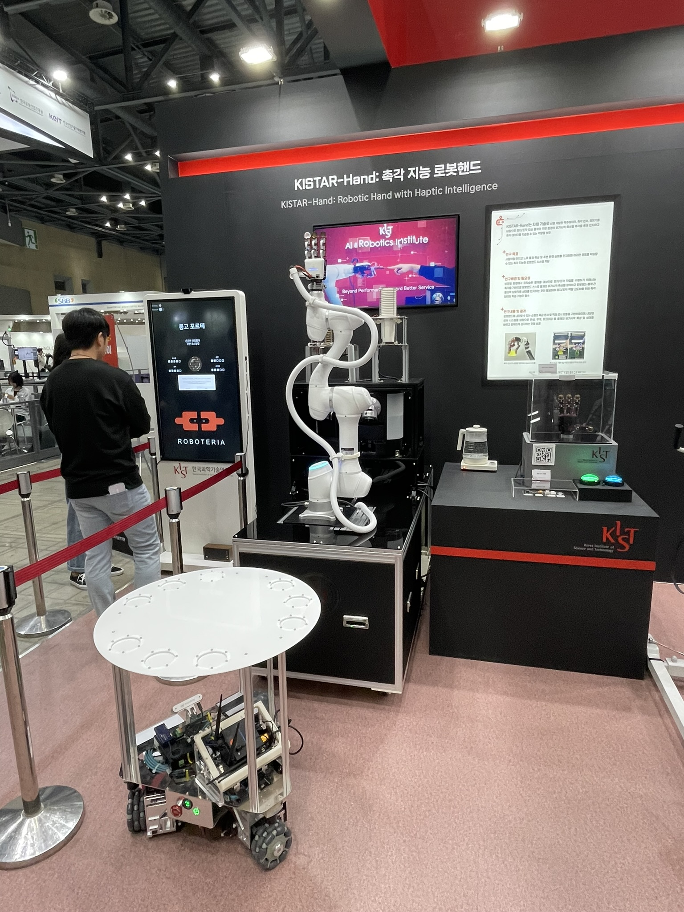
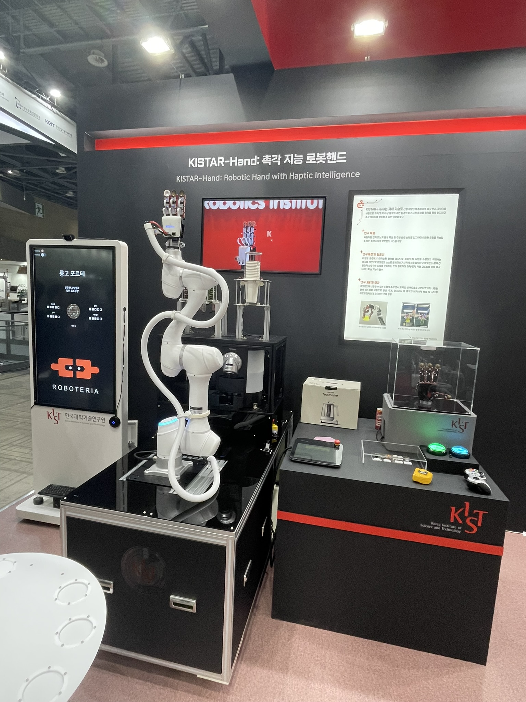
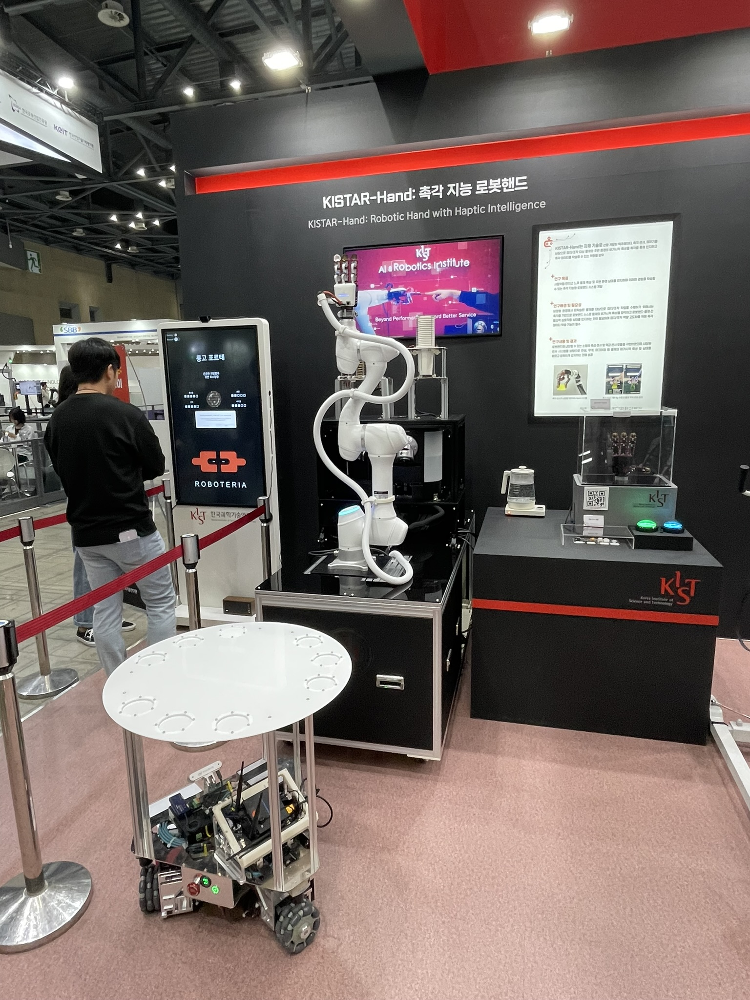

Project Overview
- Developed a compact modular Barista Robot with variable stiffness capability
- Achieved two key capabilities: Environmental adaptability and sophisticated manipulability
- Accepted in IEEE T-RO (Oct. 2024), pending final publication
- Three Proceedings and two Patents (pending)
Introduction and Problem Definition
- Collisions are inevitable between the end-effector and unstructured environment
- Barista Robot between robotic arm and end-effector is one of the solutions for manipulability and adaptability
- Existing Barista Robots lacked structural compactness and two functionalities
Solution
- Sheet-type diaphragm flexure as a motion-guiding mechanism
- Modular typed manipulator for compactness by embedding components
- Structural flexibility based flexure joint and tendon-driven actuation
Results
- Developed two-DOF modular Barista Robot
- Height: 2 mm(Joint), 55 mm(Total)
- Weight: 7.5 g(w/o actuators), 200 g(w/ actuators)
- Active stiffness variation ratio: 232.4-fold
- Verified its performance and practical effectiveness
My Contribution
- Research and development
- Conceptualization
- Design and prototyping
- Modeling and parametric analysis
- Kinematic analysis, control and sensor calibration
- Experimental characterization and evaluations
- System integration for conducting practical applicability
- Documentation and illustration


 


